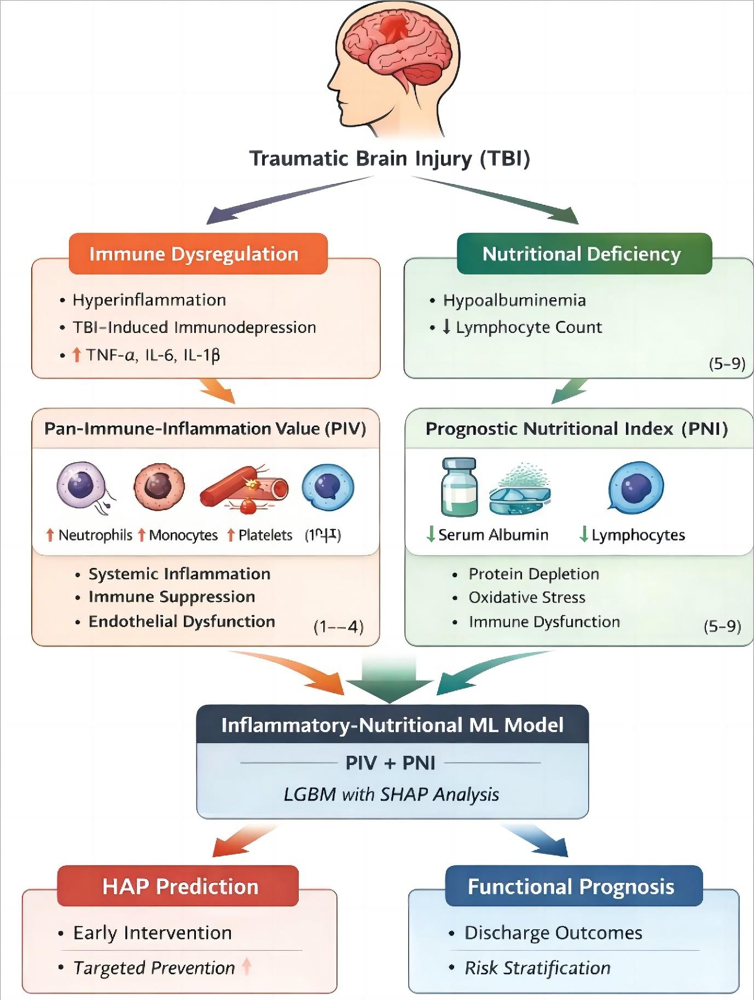
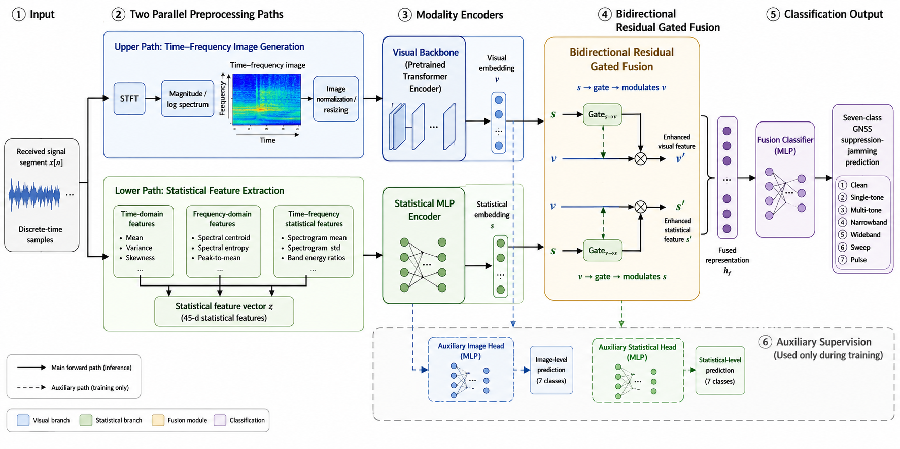

🧑💻 About Me
In 2026, I joined the College of Electronic Science and Technology at the National University of Defense Technology as a direct-entry Ph.D. student, advised by Prof. Jingyuan Xia (夏靖远). My undergraduate studies are in Software Engineering at North University of China, where I rank 1st out of 182 with a GPA of 4.24 / 5.0. My research interests include image perception, image restoration, and related computer vision topics.
📖 Education
Direct-entry Ph.D. student · Advisor: Prof. Jingyuan Xia
Undergraduate (B.Eng. in Software Engineering) · Rank: 1 / 182 · GPA: 4.24 / 5.0 · CET-6
🔥 News
- 2026.05Published the co-first-author paper "An Inflammatory-Nutritional Machine Learning Model for Risk Stratification of Hospital-Acquired Pneumonia in Traumatic Brain Injury: A Multicenter Study" in Frontiers in Nutrition.
- 2025.12Received the China University Student Self-Strength Star award.
📚 Research Experience

- Built machine learning models for early HAP risk assessment using 567 clinical cases from two medical centers.
- Developed six models with Scikit-learn, XGBoost, and LightGBM; introduced SMOTE and 10-fold cross-validation. The final LightGBM model achieved an AUROC of 0.815 on the independent test set.
- Constructed a joint feature model integrating PIV and PNI, and used SHAP for medical AI interpretability analysis, validating PIV as a core risk factor.
- Completed probability-based patient risk stratification and participated in deploying an online clinical risk prediction system for real-time personalized inference and visualization.

- Constructed a multi-band GNSS suppression-jamming dataset covering BeiDou BDS and GPS scenarios, and systematically benchmarked CNNs, scratch transformers, and pretrained vision backbones for time-frequency recognition.
- Proposed a dual-modal framework that jointly models visual time-frequency features and statistical priors, with a Bidirectional Residual Gated Fusion mechanism for cross-modal interaction and residual enhancement.
- Introduced Auxiliary Unimodal Supervision to stabilize multimodal optimization, achieving up to 98.4% test accuracy and about 98.4% Macro-F1 on seven-class recognition, with strong robustness in low-SNR, few-shot, and cross-band settings.
Sentiment Platform
- Developed a campus public opinion analysis platform integrating multi-source data collection, multimodal sentiment analysis, and visual decision support.
- Compared RNN, LSTM, GRU, and BERT models for Chinese campus public opinion sentiment classification; introduced Qwen-VL with LoRA fine-tuning for image-text sentiment analysis, achieving 95.7% accuracy on a self-built dataset.
- Designed a hybrid data collection pipeline combining scheduled batch crawling and real-time incremental updates, with multithreading, Redis caching, and retry mechanisms. The system supports daily incremental processing at the ten-thousand level with second-level update latency under 3 seconds.
- Contributed to backend modular architecture, data storage, API communication, and permission management.
🎖 Honors and Awards
Additional honors include 24 provincial awards, over 30 university-level awards, 2025 China College Student Self-Improvement Star, nominee for China's Most Beautiful College Student, North University of China Special Scholarship (top 1%), and OpenAtom Open Source Pioneer Individual.
💻 Blog & Campus Experience
Bilibili Computer Knowledge Creator - Su Xiaoyu Douglas
I create educational videos about computer science courses and development experience. My videos have reached over 1.4 million student views, received over 20,000 likes, with a single video reaching over 250,000 views and 3,000 favorites.
Courses covered include Introduction to Deep Learning, Algorithm Analysis and Design, Introduction to Information Security, Operating Systems, Computer Organization Principles, Digital Circuits, and more than 12 other courses.